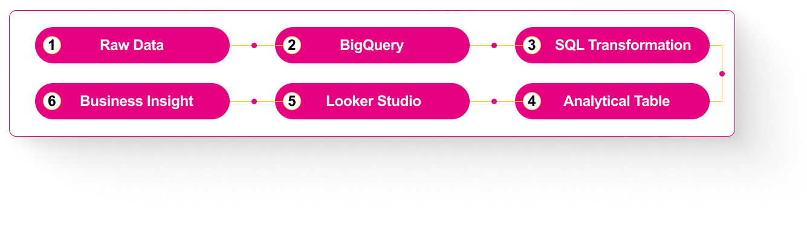

I built an end-to-end business performance analytics solution for Kimia Farma covering 2020–2023.
The project integrates transaction, product, inventory, and branch data into Google BigQuery, transforms the data using SQL, and delivers an interactive Google Looker Studio dashboard to analyze revenue, sales, profit, branch performance, customer ratings, and regional performance.
The Problem
Kimia Farma's business data came from multiple datasets covering different aspects of the business, including transactions, products, inventory, and branch information.
The challenge was to turn these separate datasets into a single analytical view that could be used to evaluate business performance across different branches, products, and regions.
The analysis needed to answer questions such as:
- How does revenue change over time?
- Which provinces generate the most transactions?
- Which branches generate the highest net sales?
- How does branch rating compare with transaction rating?
- How is profit distributed across Indonesia?
The project requirements specifically called for analysis of revenue trends, provincial transactions and sales, branch ratings, and profit by province.
What I Did
I integrated 4 datasets into BigQuery, built an analytical table using SQL, applied business logic for sales and profit calculations, and connected the result to Looker Studio.
End-to-End
